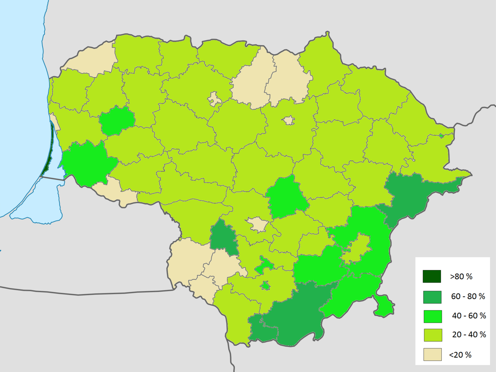
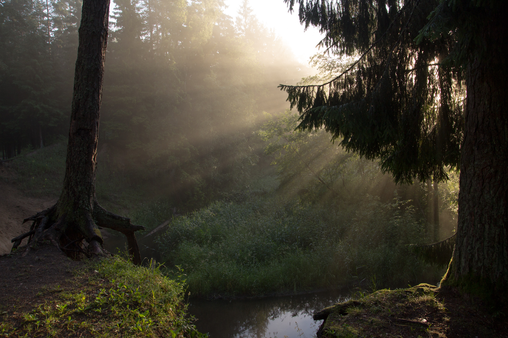

Lietuvos miškai – gamtos širdis
Lietuva garsėja savo turtingais ir įvairiais miškais, kurie užima apie 33% šalies teritorijos. Tai yra vienas didžiausių miškų plotų Europoje. Miškai yra svarbi ekologinė sistema, kuri palaiko biologinę įvairovę, gerina klimato sąlygas ir teikia daugybę išteklių žmonėms.
Medžių rūšys Lietuvos miškuose
Lietuvos miškuose auga įvairios medžių rūšys, įskaitant:
- Pušys – dažniausiai pasitaikanti rūšis Lietuvos miškuose.
- Egles – būdingos šaltoms ir drėgnoms vietovėms.
- Beržai – paprastai augantys drėgnose vietose.
- Ąžuolai – vertinami dėl savo ilgaamžiškumo ir tvirtumo.
- Liepos – naudojamos tiek medienai, tiek žiedams.
Ekologinė svarba
Miškai atlieka esminį vaidmenį mūsų ekologijoje, nes:
- Palaiko biologinę įvairovę, suteikdami prieglobstį daugybei augalų ir gyvūnų rūšių.
- Veikia kaip anglies dioksido saugyklos, mažindami klimato kaitą.
- Teikia naudingus išteklius, tokius kaip mediena, uogos, vaistažolės ir grybai.
- Padeda išlaikyti oro grynumą ir turi teigiamą poveikį žmonių sveikatai.
Miškų apsauga
Miškai yra svarbi gamtos dalis, tačiau jų būklė yra jautri. Atsakingas miškų naudojimas ir apsauga užtikrina, kad miškai galėtų išlikti ateities kartoms. Šiuo metu Lietuva skiria didelį dėmesį miškų apsaugai ir tvariam naudojimui, taip pat visu tuo rūpinasi Lietuvos aplinkos apsauga, remiantis konstitucija - Straipsnis.

